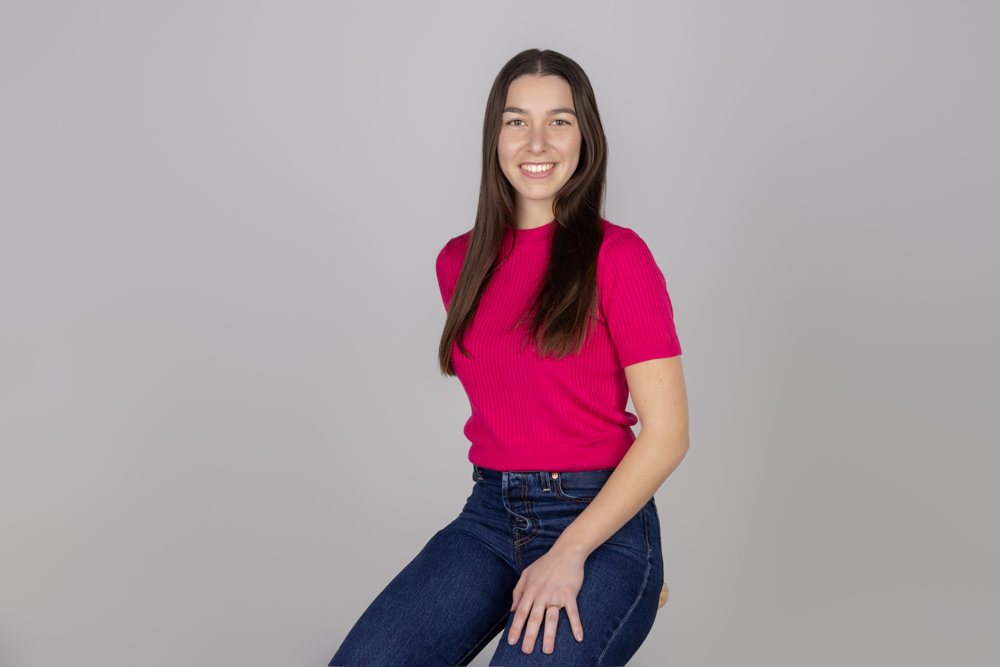

Georgina Masanes Lopez

Contact Me
Summary
Material engineer with a Master in International Management. I define myself as hard worker with strategic thinking and a preference for collaborative team environments.
Know more about me here!
Education
Master in International Management
EADA Business School
October 2023 - July 2024
Bachelor in Materials Engineering
Universitat Politècnica de Catalunya (UPC)
September 2019 - June 2023
Erasmus +
Luleå Tekniska Universitet (LTU)
August 2022 - December 2022
Work experience
Product Analyst
Dow Jones, Barcelona
October 2024 - February 2025
- Analyzed and promoted customer and stakeholders' feedback to enhance and optimize our product.
- Contributed to Road Map projects and produced the requirements documents for these.
- Communicated effectively with our stakeholders to achieve alignment on project goals, gather insights, and ensure seamless implementation of improvements.
Internship
Dow Jones, Barcelona
July 2024 - September 2024
- Developed a competitor analysis to enhance sales strategies and providing valuable feedback on product improvement.
- Collaborated with cross-functional teams to support various projects aimed at optimizing business operations.
Languages
- Native Spanish and Catalan
- C1 English
- B1 German
Skills
- Proficient knowledge of MS Office
- Experience with Business Data Bases
- Basic Python and C#, Power BI, SQL